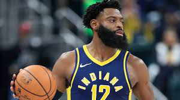
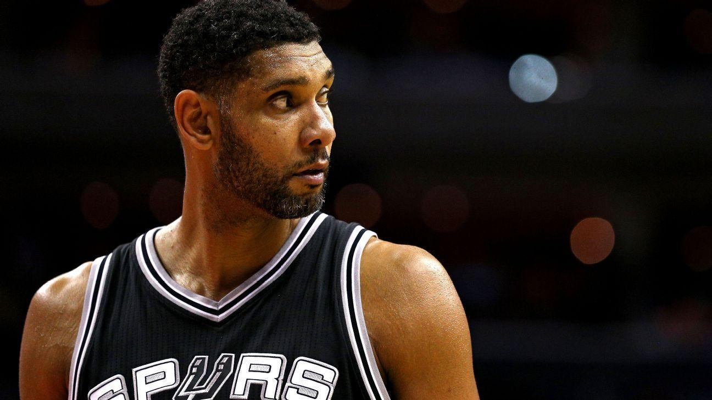
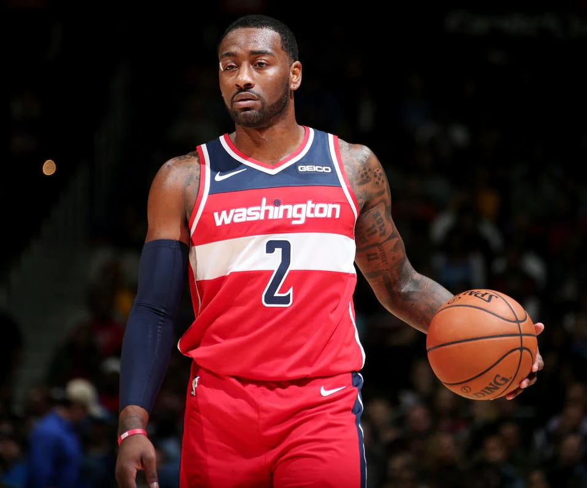
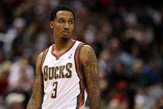

1.Los Angeles Lakers: Kobe Bryant

You have no idea how much I wanted to say Metta World Peace. But seriously, Kobe has been the leader of the Lakers since Shaq left. Basically, whatever Kobe says, goes. Only time will tell how Mike Brown will be able to handle his superstar.
. A shooting guard, he spent his entire 20-year career with the Los Angeles Lakers in the National Basketball Association (NBA). Widely regarded as one of the greatest basketball players and scorers of all time
2.Sacramento Kings: Tyreke Evans

Tyreke Evans, the 2010 Rookie of the Year, is by far the best leader on the Kings. He is their best player, and unless DeMarcus Cousins can mature, and fast, he is the default leader for their team. The Kings have many good pieces, and Evans has to try to motivate them so as to compete with the best in the West.
On March 31, 2009, Evans declared himself eligible for the 2009 NBA draft, opting to forgo his remaining three seasons of collegiate eligibility. He was selected on June 25, 2009, by the Sacramento Kings with the fourth overall pick.
3.San Antonio Spurs: Tim Duncan

Tim Duncan has been the leader of the Spurs since he was first drafted. He has set the tone for their fundamentally-perfect style of play for more than a decade. His skill on both ends of the floor has won four titles for San Antonio, along with his ability to harness the best out of all of his teammates.
Duncan was the NBA Rookie of the Year after being selected by San Antonio with the first overall pick in the 1997 NBA draft. He primarily played the power forward position and also played center throughout his career.
4.Washington Wizards: John Wall

The franchise player for the Wizards, Wall probably would have been the Rookie of the Year if not for Blake Griffin. He is the person who the team is building around because of his talent and because of his work ethic and leadership skills. The Wizards have a bright future with Wall handling the point for them.
League rules stated that American players must turn 19 during the year of the draft and be a year removed from their regular high school class. NBA spokesman Tim Frank told sportswriter Chad Ford that the league was not sure whether Wall met the second criterion.
5.Milwaukee Bucks: Brandon Jennings

Jennings is a talented young point guard, and he is one piece that Milwaukee believes will help convert them into a contender. His ineffiecient shooting is more a product of being the only effective offensive player on his team than any fault of his own. Jennings has proven that he can be the leader that the Bucks have lacked for so long.
The contract he signed with Roma was for $1.65 million net income guaranteed.[12] After earning the contract with Lottomatica, Under Armour gave Jennings a $2 million contract[13] to showcase their products in the Euroleague.